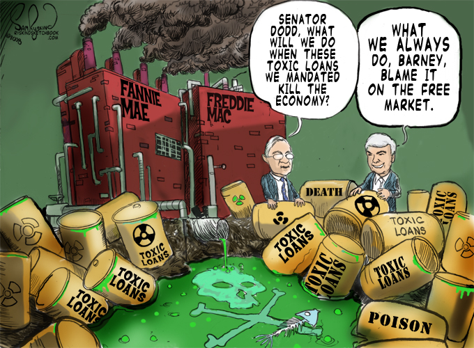
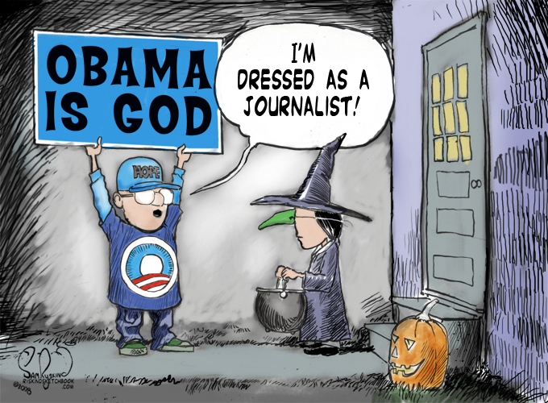

The Outside World
In 1929, cars were unreliable and belched all sorts of noxious fumes into the atmosphere. Computers did not exist. Airplanes were slow and unsafe. Movies had just recently gotten sound. TV and FM radio did not exist. The iPod and cell phone were misspellings. DNA was just three letters and genetics non-existent. The stock market crashed and we were on our way to a depression. In 2009, cars are reliable and produce little noxious gases. There are billions of computers in the world, especially when you count the ones in cars, thermostats, cell phones, etc. Airplanes are fast, safe, and affordable. Home entertainment centers have surround sound and quality so good you think you are in the movie theater. TV is digital and FM is everywhere. Close to 200 million iPods and billions of cell phones have been sold. The human genome has been sequenced multiple times...and the stock market crashed. Many argue that we are headed for a deep recession, if not depression. It seems more than obvious to me that we need to import some of the methods of knowledge transfer from the technologists into the rest of our life structures. —Seymour Friedel
Congress, the press, and the bureaucracy too often focus on how much money or effort is spent, rather than whether the money or effort actually achieves the announced goal. —Donald Rumsfeld, 1974 Just as unskilled manual workers in manufacturing were the dominant social and political force in the 20th century, knowledge technologists are likely to become the dominant social — and perhaps also political — force over the next decades. —Peter Drucker The challenge for my generation was to provide an intellectual defense of economic liberty. The challenge for the current generation is to keep it. —Milton Friedman
Eben Moglen says that one of the goals of the free software movement is to expand opportunities for billions more people out there — to quit throwing away most of the brains on earth. This book is about free software, but I'd like to end this afterword with a few ideas on a free press, free markets and several other issues. If it weren't for our scientists and engineers, we'd still be picking our noses is caves, and the lawyers in divorce proceedings would be fervently arguing about how to divide up the rocks. Our scientists can tell us that one pound of Uranium generates the same amount of power as three million pounds of Coal, but whether we choose to use that fact is a decision of the Lawyers. It's the outside world which determines whether we will put our scientists to work, sue them, or starve them. High taxes might have the benefit of taking money away from the “evil corporations”, but they also leave less money to spend on R&D.
Powering a free society
After a quarter-century of gas tax hikes, a ban on drilling for oil and a complete destruction of the nuclear power industry in America, I guess liberals can declare: Mission accomplished! In response to skyrocketing gas prices, they say, practically in unison, “We can't drill our way out of this crisis.” What does that mean? This is like telling a starving man, “You can't eat your way out of being hungry!” Finding more oil isn't going to increase the supply of oil? It is the typical Democratic strategy to babble meaningless slogans, as if they have a plan. Their plan is: the permanent twilight of the human race. It's the only solution they can think of to deal with the beastly traffic on the LIE (Long Island Expressway). Liberals complain that — as Barack Obama put it — there's “no way that allowing offshore drilling would lower gas prices right now. At best you are looking at five years or more down the road.” This is as opposed to airplanes that run on woodchips, which should be up and running any moment now. Moreover, what was going on five years ago? Why didn't anyone propose drilling back then? Say, you know what we need? We need a class of people paid to anticipate national crises and plan solutions in advance. It would be such an important job, the taxpayers would pay them salaries so they wouldn't have to worry about making a living and could just sit around anticipating crises. If only we had had such a group — let's call them “elected representatives” — they could have proposed drilling five years ago! But of course we do pay people to anticipate national problems and propose solutions. Some of them — we'll call them Republicans — did anticipate high gas prices and propose solutions. —Jim Bangs
I went through thick and thin in the nuclear plant licensing process. The Shoreham, New York, plant was in operation. It got up to well over 1% power, and then they shut it down. Democrat Governor Mario Cuomo made 'em drill holes in the reactor vessel so it could never be used again. And it was the first plant that had been built under the newest and safest regulations, and it took them years. It cost us well over a billion dollars, and they just wrote it off. —Jim
, Shoreham Nuclear Regulatory Commission Project Manager The Alvin W. Vogtle Nuclear Generating Station in Burke County, Georgia, has two 1,200-MW reactors sitting on the Savannah River, directly across from the federal nuclear processing facilities in South Carolina. Now Southern Nuclear, which owns Vogtle, wants to build two new 1,000-MW reactors as part of the nuclear renaissance. Environmental groups have immediately taken up the challenge, arguing that dredging the Savannah River to allow barge delivery of reactor parts will damage the river. The Savannah was dredged regularly for more than a century until the Army Corps of Engineers gave up in 1980 because nothing much was happening on the river. Now environmental groups say a renewal will ruin the environment. The Nuclear Regulatory Commission has nodded agreement and will require an environmental impact statement before early site clearance can begin. That will probably add three years to the project. —William Tucker
Leonardo Cavallaro, a man who designed nuclear power plants until the mid-70s when the industry collapsed, told me that “Energy changes everything.”
Each invention which decreased the amount of energy man himself had to expend to accomplish a task increased his quality of life. The use of the animals, water wheels to mill grain, steam, electricity and batteries have each made our lives easier. Few things would further increase our quality of life more than making energy ten times cheaper than it is today.
One of the biggest reasons for offshoring of manufacturing jobs outside of the US is the cost of energy. It takes a lot of energy to bend steel! The idea that it was okay to offshore manufacturing because America is moving to a service economy is one of the dumbest ideas ever uttered because it doesn't recognize that it isn't until you do something that you figure out how to do it.
Every step that you take both solves today's problems, and sets you up to take on new problems. At Microsoft, we had a phrase “Crawl, Walk, Run” and it applies to other sectors as well as software:
Make TVs -> Make robots which make TVs -> Make robots which make your bed 99 cent plastic toy -> materials sciences for toys -> materials sciences changing all building materials Food production -> genetically modified food -> genetically modified everything In 1996, President Clinton vetoed legislation to increase drilling for oil inside the US because he said it wouldn't do anything for 10 years. 10 years later, with record gas prices, many in Congress said they are against it because it won't do anything for 10 years. Either people in our government are incapable of thinking long-term, or they have been bribed by special interests and treat us like fools.
Free Markets

Congress creates the problem, blames the free market, and uses the crisis as an excuse to create more government.
A man's admiration for absolute government is proportionate to the contempt he feels for those around him. —Alexis de Tocqueville Nobody spends somebody else's money as wisely as he spends his own. A major source of objection to a free economy is precisely that it gives people what they want instead of what a particular group thinks they ought to want. Underlying most arguments against the free market is a lack of belief in freedom itself. Everybody agrees that socialism has been a failure. Everybody agrees that capitalism has been a success...yet everybody is extending socialism! Spending by government in 1989 amounts to about 45 percent of national income. By that test, government owns 45 percent of the means of production that produce the national income. The U.S. is now 45 percent socialist. —Milton Friedman I predict future happiness for Americans if they can prevent the government from wasting the labors of the people under the pretense of taking care of them. —Thomas Jefferson While recovering from an emergency ruptured appendix operation in a Libyan state-run, universal health-care clinic in Tripoli, an exasperated doctor lamented to me that the fellow who was mopping the floor beside the bed by fiat made exactly what he did. —Victor Davis Hanson
If I were designing a health care system from scratch, I would probably go ahead with a single-payer system. —Barack Obama
So you think that money is the root of all evil? Have you ever asked what is the root of money? Money is a tool of exchange, which can't exist unless there are goods produced and men able to produce them. Money is the material shape of the principle that men who wish to deal with one another must deal by trade and give value for value. —Ayn Rand, Atlas Shrugged Where freedom is real, equality is the passion of the masses. Where equality is real, freedom is the passion of a small minority. —Eric Hoffer There is a correlation between the free market and free software, as both are powered by innovation created by millions of disconnected individuals, acting in their own self-interest — scratching their own itch. The collaborative process in free software which weeds out the bad ideas is very similar to what happens in the free market. Innovation might be disruptive, but the alternative is stagnation, bad in both software and life.
Healthcare is the political topic du jour, and many advocate the government involvement in creating a “public option” to increase “choice and competition” in healthcare. But in the Microsoft antitrust trial, the government never argued the way to increase competition in software would be for the government to get into the business, and if they had, they would have been laughed out of the courtroom! What America the world's only superpower in 200 years was that it had the freest economy. History has demonstrated repeatedly that companies innovate much faster than the government; the free market is us. Government doesn't innovate because it isn't set up to do that; every expense is a pre-planned line item in the budget. No government employee can go to work one day and ask their boss for some extra money so they can develop a new idea to make more money. In fact, working for such organizations must drain the humanity from its workers.
Many think that the free market is evil because the spoils are unequally distributed. What they are missing is something that Milton Friedman wrote:
Industrial progresses, mechanical improvement, all of the great wonders of the modern era have meant relatively little to the wealthy. The rich in Ancient Greece would have benefited hardly at all from modern plumbing: running servants replaced running water. Television and radio, the Patricians of Rome could enjoy the leading musicians and actors in their home, could have the leading actors as domestic retainers. Ready-to-wear clothing, supermarkets all these and many other modern developments would have added little to their life. The great achievements of Western Capitalism have redounded primarily to the benefit of the ordinary person. These achievements have made available to the masses conveniences and amenities that were previously the exclusive prerogative of the rich and powerful. Today, we are told to despise many types of corporations, from energy to health insurance. This ignores the social utility they create in employing people and providing value to customers. All transactions in a free market are voluntary; whereas if you don't like a product or service your government is providing, there is no way to opt out of paying for it. It is inexplicable that so many, especially geeks who are by nature anti-establishment, want to hand their their property and liberty over to unaccountable bureaucrats who run a monopoly that Microsoft would jealous of.
Free market capitalism is also a human rights issue: it is about the right to make and purchase what one wishes and to keep the fruits of one's labor. Even the most egalitarian programmer would never suggest that Linus should earn the same amount as a newbie programmer. Profits have to be earned in a free market, and it generates more innovation and competition. A recent newspaper headline proclaimed that there is a shortage of family doctors in America. The free market can handle this: those doctors can raise their fees, which will also encourage more doctors to go into this specialty. This is the “invisible hand” described in Adam Smith's The Wealth of Nations, written way back in 1776.
Greed is not bad — it is what gets people out of bed in the morning. The dream of making a million dollars for someone else doesn't provide the same motivation as making it for yourself! Supporters of the free market aren't against welfare nets, but they are against a welfare state and punishing success.
Here is a quote from Mark Levin's Liberty and Tyranny:
The Statist is constantly agitating for government action. And in furtherance of that purpose, he speaks in the tongue of the demagogue, concocting one pretext and grievance after another to manipulate public perceptions and build popular momentum for the divestiture of liberty and property from its rightful possessors. The industrious, earnest, and successful are demonized as perpetrators of various offenses against the public good, which justifies governmental intervention on behalf of the endless parade of “victims.” In this way, the perpetrator and the victim are subordinated to the government's authority — the former by outright theft, the latter by dependent existence. The Statist veils his pursuits in moral indignation, intoning the injustices and inequities of liberty and life itself, for which only he can provide justice and bring a righteous resolution. And when the resolution proves elusive, as it undoubtedly does — whether the Marxist promise of “the workers' paradise” or the Great Society “war on poverty” — the Statist demands even more authority to wring out the imperfections of mankind's existence. Failure is not the product of his beliefs but merely want of power and resources. Thus are born endless rationalizations for seizing ever more governmental authority. Paul Krugman, who won a Nobel Prize in economics, wrote: “If the rich get richer, the poor and middle-class must get poorer as a matter of arithmetic.” It is stunning that he doesn't understand that innovation brings new wealth to a society. The sad part about today's intelligentsia is that they do not accept even decades-old economic theories like how the free market generates the most prosperous society.
Nothing would improve our world more than having more people familiar with the benefits of the free market, a concept as subtle as free software. Anyone who thinks their government ought to do more than enforce the border, create an army and a provide a basic welfare net should read Milton Friedman's Free to Choose. His writings suggest profound implications for our government which is steadily intruding itself into every aspect of our lives from cradle to grave. We citizens should read his work, and demand our elected representatives implement the ideas contained therein. If a medical doctor didn't follow scientific advancements of the last 40 years, he would be sued for malpractice, but somehow in government, economic malpractice is allowed!
The Legislature
The curious task of economics is to demonstrate to men how little they really know about what they imagine they can design. Before the obvious economic failure of Eastern European socialism, it was widely thought that a centrally planned economy would deliver not only “social justice” but also a more efficient use of economic resources. This notion appears eminently sensible at first glance. But it proves to overlook the fact that the totality of resources that one could employ in such a plan is simply not knowable to anybody, and therefore can hardly be centrally controlled. —Frederick Hayek, The Fatal Conceit Knowledge is one of the scarcest of all resources in any economy. Even when leaders have much more knowledge and insight than the average member of the society, they are unlikely to have nearly as much knowledge and insight as exists scattered among millions of people subject to their governance. —Thomas Sowell, Basic Economics To provide for us in our necessities is not in the power of Government. It would be a vain presumption in statesmen to think they can do it. —Edmund Burke, 1795 Of all tyrannies, a tyranny sincerely exercised for the good of its victims may be the most oppressive. It would be better to live under robber barons than under omnipotent moral busybodies. The robber baron's cruelty may sometimes sleep, his cupidity may at some point be satiated; but those who torment us for our own good will torment us without end for they do so with the approval of their own conscience. —C.S. Lewis Suppose you were an idiot. And suppose you were a member of Congress. But I repeat myself. —Mark Twain A nation trying to tax itself into prosperity is like a man standing in a bucket and trying to lift himself up by the handle. —Winston Churchill A government big enough to give you everything you want, is strong enough to take everything you have. My reading of history convinces me that most bad government results from too much government. —Thomas Jefferson The government solution to a problem is usually as bad as the problem. —Milton Friedman We don't have a trillion-dollar debt because we haven't taxed enough; we have a trillion-dollar debt because we spend too much. —Ronald Reagan, 1989 No government ever voluntarily reduces itself in size. Government programs, once launched, never disappear. Actually, a government bureau is the nearest thing to eternal life we'll ever see on this Earth. A young man, 21 years of age, working at an average salary — his Social Security contribution would, in the open market, buy him an insurance policy that would guarantee $220 dollars a month at age 65. The government promises $127. Now are we so lacking in business sense that we can't put this program on a sound basis? Barry Goldwater thinks we can. —Ronald Reagan, 1964 Only a crisis, real or perceived, produces real change. When that crisis occurs, the actions that are taken depend on the ideas that are lying around. That, I believe, is our basic function: to develop alternatives to existing policies, to keep them alive and available until the politically impossible becomes politically inevitable. —Milton Friedman The problem with America is the high cost of energy, healthcare, education, regulation, litigation, and taxation. All decrease the rate of progress and push jobs offshore. All of these problems can be fixed, but it is the US Congress who must fix it. They could pass legislation to fix all these problems in a small number of years if the citizens demanded it. Plans for all manner of reform have been sitting around for decades, waiting for the political will. Ronaldus Magnus talked about the need to reform the Social Security ponzi scheme in the 1960s, and today we are still merely talking! America is a few votes away from so much progress.
Before legislation can be voted on in the Senate, it needs a 60 vote requirement to end debate. This is a good check and balance because it can allow a minority to keep out a bad government solution, which can be worse than the problem. However, for the long-standing problems that have existed in the United States, it is entrenched interests in the Senate that have stalled progress. A lot of people blame President Bush for the problems in the world because his party controlled both houses of Congress for several years, but this ignores the 60 vote requirement necessary to pass any non-trivial legislation.
Unfortunately, lots of what the Congress does involves so many details that get lost on the public, which is why the media play such an important role in educating or even shaping public opinion.
Education of a free society
Education is the transmission of civilization. —Will Durant, American historian Give me four years to teach the children, and the seed I have sown will never be uprooted. —Vladimir Lenin The philosophy of the school room in one generation will be the philosophy of government in the next. —Abraham Lincoln I spent four years in the 1990s working at the centrist Brookings Institution and for the Clinton administration and felt right at home ideologically. Yet during much of my two decades in academia, I’ve been on the “far right” as one who thinks that welfare reform helped the poor, that the United States was right to fight and win the Cold War, and that environmental regulations should be balanced against property rights. All these views — commonplace in American society and among the political class — are practically verboten in much of academia. At many of the colleges I’ve taught at or consulted for, a perusal of the speakers list and the required readings in the campus bookstore convinced me that a student could probably go through four years without ever encountering a right-of-center view portrayed in a positive light. A sociologist I know recalls that his decision to become a registered Republican caused “a sensation” at his university. “It was as if I had become a child molester,” he said. He eventually quit academia to join a think tank because “you don’t want to be in a department where everyone hates your guts.” Daniel Klein of George Mason University and Charlotta Stern of Stockholm University looked at all the reliable published studies of professors’ political and ideological attachments. They found that conservatives and libertarians are outnumbered by liberals and Marxists by roughly two to one in economics, more than five to one in political science, and by 20 to one or more in anthropology and sociology. I doubt that legions of leftist professors have set out to purge academia of Republican dissenters. I believe that for the most part the biases conservative academics face are subtle, even unintentional. When making hiring decisions and confronted with several good candidates, we college professors, like anyone else, tend to select people like ourselves. Unfortunately, subtle biases in how conservative students and professors are treated in the classroom and in the job market have very unsubtle effects on the ideological makeup of the professoriate. The resulting lack of intellectual diversity harms academia by limiting the questions academics ask, the phenomena we study, and ultimately the conclusions we reach. —Robert Maranto
, Associate Professor of Political Science, Villanova University Sometime in the 1960s, Higher education abandoned their role as advocates of American values — critical advocates who tried to advance freedom and equality further than Americans had yet succeeded in doing — and took on the role of adversaries of society. English departments have been packed by deconstructionists who insist that Shakespeare is no better than rap music, and history departments with multiculturalists who insist that all societies are morally equal except our own, which is morally inferior. This regnant campus culture helps to explain why Columbia University, which bars ROTC from campus on the ground that the military bars open homosexuals from service, welcomed Iran’s president Mahmoud Ahmadinejad, whose government publicly executes homosexuals. What it doesn’t explain is why the rest of society is willing to support such institutions by paying huge tuitions, providing tax exemptions and making generous gifts. —Michael Barone
, American political analyst Thirty years from now the big university campuses will be relics. Universities won't survive. It's as large a change as when we first got the printed book. Do you realize that the cost of higher education has risen as fast as the cost of health care? And for the middle-class family, college education for their children is as much of a necessity as is medical care—without it the kids have no future. Such totally uncontrollable expenditures, without any visible improvement in either the content or the quality of education, means that the system is rapidly becoming untenable. Higher education is in deep crisis. —Peter Drucker I would rather be governed by the first 2,000 names in the Boston telephone directory than by the 2,000 members of the Harvard faculty. —William F. Buckley Jr., Rumbles Left and Right, 1963 A study demonstrated that 90% of the money donated by Harvard professors
in the 2006 election went to the Democrats. Blogger and alumnus Steven M. Warshawsky tells me that there is one recognized conservative professor at Princeton, Robert P. George. I once asked a political science student at a local Seattle university whether there were any Republican professors, and he merely laughed. Higher-ed today focuses on diversity of skin color, but not on diversity of thought. They are factories of liberalism which have infected journalism and government. For the institutions that are supposed to be preparing the next generation, this is a disaster, especially because no one ever thinks they've been brainwashed.
Free Press
Promote then as an object of primary importance, institutions for the general diffusion of knowledge. In proportion as the structure of a government gives force to public opinion, it is essential that public opinion should be enlightened. —George Washington Farewell Address, 1796 Journalism naturally draws liberals; we like to change the world. —Washington Post
Ombudswoman Tonight we have put the best child care system in the world on the American Agenda. That is to say, the system which is acknowledged to be the best outside the home. It’s in Sweden. The Swedish system is run and paid for by the Swedish government, something many Americans [such as me] would like to see the U.S. government do as well. —Peter Jennings
, Anchorman of ABC News, 1989 I thought from the outset that Reagan's supply-side theory was just a disaster. I knew of no one who felt it was going to work. —Tom Brokaw
, Anchorman of NBC News, 1983 The collapse of Fannie and Freddie was completely preventable. The party that blocked any attempt to prevent it was: the Democrat Party. The party that tried to prevent it was: the Republican Party. I have no doubt that if these facts had pointed to the Republican Party or to John McCain as the guilty parties, you would be treating it as a vast scandal. “Housing-gate,” no doubt. Or “Fannie-gate.” Instead, it was Senator Christopher Dodd and Congressman Barney Frank, both Democrats, who denied that there were any problems, who refused Bush administration requests to set up a regulatory agency to watch over Fannie Mae and Freddie Mac, and who were still pushing for these agencies to go even further in promoting sub-prime mortgage loans almost up to the minute they failed. Yet when Nancy Pelosi accused the Bush administration and Republican deregulation of causing the crisis, you in the press did not hold her to account for her lie. Instead, you criticized Republicans who took offense at this lie and refused to vote for the bailout! And after Franklin Raines, the CEO of Fannie Mae who made $90 million while running it into the ground, was fired for his incompetence, one presidential candidate's campaign actually consulted him for advice on housing. If that presidential candidate had been John McCain, you would have called it a major scandal and we would be getting stories in your paper every day about how incompetent and corrupt he was. But instead, that candidate was Barack Obama, and so you have buried this story, and when the McCain campaign dared to call Raines an “adviser” to the Obama campaign — because that campaign had sought his advice — you actually let Obama's people get away with accusing McCain of lying, merely because Raines wasn't listed as an official adviser to the Obama campaign. You would never tolerate such weasely nit-picking from a Republican. —Orson Scott Card
, science fiction writer (Democrat) The Republican debate provided red meat for conservatives: anti-gay, pro-Jesus, anti-abortion and no gray matter in between. —Brian Williams
, Anchorman of NBC News, 2000 In a world without truth, freedom loses its foundation. —Pope John Paul II In America the President reigns for four years, and Journalism governs forever and ever. —Oscar Wilde There never was an age of conformity quite like this one, or a camaraderie quite like the Liberals'. Drop a little itching powder in Jimmy Wechsler's bath and before he has scratched himself for the third time, Arthur Schlesinger will have denounced you in a dozen books and speeches, Archibald MacLeish will have written ten heroic cantos about our age of terror, Harper's will have published them, and everyone in sight will have been nominated for a Freedom Award. —William F. Buckley Jr.
, National Review, 1955 The skillful propagandist has the power to mold minds in any direction he chooses, and even the most intelligent and independent people cannot entirely escape their influence if they are long isolated from other sources of information. —Frederick Hayek, The Road to Serfdom
Poster of a smirking face found on many walls in Edinburgh in 2005.
A free society requires educated citizens for good governance. The world we live in is very complex, which is why the media have such an important role. Unfortunately, the mainstream media is mostly filled with liberals who push a big-government agenda, and it has been that way for many decades. The press in America are mostly free of government funding and control, but if they advocate for government-provided childcare, higher taxes, and other trappings of socialism, what is the difference? The reason we don't have nuclear power plants in America is not simply because the Congress has obstructed this progress, but because the media indelibly etched the Three Mile Island nuclear accident as a catastrophe into the consciousness of America, even though no one died.
While there are conservatives in the media such as at Fox News and The Wall Street Journal, nearly all the rest, from the big three TV networks of ABC, CBS, and NBC, to the cable networks of CNN and MSNBC, to all of the major newspapers from The Washington Post, to The New York Times, and The LA Times, lean Democrat.
Jack Cashill wrote
that The Kansas City Star, which serves a center-right community “has created a product, both in its reporting and in its editorial, much better suited to the residents of say, Boston or Seattle, than of Kansas City.”
Not only is the media biased in the US, it appears to be biased around the world as well. There was a recent study
commissioned by the BBC which found itself to be guilty of a “left-wing bias,” and a “bias of omission.” This study came out 1.5 years ago; a company could reinvent itself in that time, but I wonder if the BBC has made any changes? The bias in the news filters to the outside world: a study found that late-night comics skewer Republicans by a ratio of 7 – 1.
Everyone has personal biases, but if The New York Times is an intellectually honest newspaper, why hasn't it endorsed a Republican for President in the last 60 years? If Ronald Reagan was the great president as he is now generally accepted to have been, why did they miss two chances to endorse him? Surely there are countless other things, with hindsight of only a few years, that they have gotten wrong.
The key to successful propaganda is two things: repetition, and lie by omission. A good example is how the media have repeatedly reported
that President Bush is lazy, using the fact that he has taken a record number of “vacation days”:
President Bush recently spent his 879th day at his ranch in Crawford, Texas, breaking former President Reagan's record for taking vacations from the White House. Note how a vacation day is defined as one not at the White House. However, it leaves out the fact that a President takes the resources of the White House with him wherever he goes, and President Bush has had meetings with foreign leaders, and with his various national security and economic teams at his Texas ranch. The media leave all these facts out, and just report again and again that they have “the numbers” to prove that Bush is lazy — even though he gets up at 5 am and exercises every day.
It is with repetition and the ability to lie by omission that the media can mold minds in any direction they choose. I have Russian friends from Microsoft who lived in the Soviet Union during the days of Pravda, and yet they don't seem to imagine that those same propaganda techniques could and do exist here. I believe the bias of the media is one of the greatest ongoing scandals of our age.
How can the media be leftward in this center-right country? Why doesn't the free market fix this? The answer is that the barriers to entry for a newspaper or TV station are very high. If you live in New York, you read The New York Times, and even those who don't like its extreme political bent read it for other reasons such as its Arts section.
Like creating a newspaper, creating a TV network is also very difficult; CBS, NBC and ABC have been around for almost 70 years. Even though there is now cable news, the big 3 TV networks have 10 times as many viewers.
While Fox News has higher ratings than CNN and MSNBC combined, the rest of the media have colluded to discredit it as a mere propaganda arm of the Republican party. I've talked to a fair number of fellow software engineers who scoff at the idea of Fox as a legitimate news organization; the simplest way to squelch other viewpoints is to discredit them like this. Fox News was long-anchored by Brit Hume, who worked for ABC News for 23 years without getting fired for being a nutcase, but now it is presumed that he is.
Pundit Charles Krauthammer wrote: “Rupert Murdoch and Roger Ailes are geniuses: They found a niche market — half of America.”
A video demonstrating how screwed up the news media in America is can be found at: http://bit.ly/BrokenMedia
. In another era, this interview would have been a scandal, but this sort of malfeasance takes place every day. The election of Barack Obama is a an excellent case study of media bias.
Barack Obama

Halloween 2008, by Sam Ryskind
Media bias in 2008 was the most disgusting failure in our business since the Iraq war. It was extreme bias, extreme pro-Obama coverage. I think it's incumbent upon people in our business to make sure that we're being fair. The daily output was the most disparate of any campaign I've ever covered, by far. —Mark Halperin
, Time Magazine (not a right-wing magazine) The mainstream media were not to blame for John McCain's loss. —Washington Post
Ombudsman (not a right-wing newspaper) But Obama deserved tougher scrutiny than he got, especially of his undergraduate years, his start in Chicago and his relationship with Antoin "Tony" Rezko, who was convicted this year of influence-peddling in Chicago. Another gaping hole in coverage involved Joe Biden, Obama's running mate. When Gov. Sarah Palin was nominated for vice president, reporters were booking the next flight to Alaska. Some readers thought The Post went over Palin with a fine-tooth comb and neglected Biden. They are right; it was a serious omission. —Washington Post
Ombudsman, the previous week As for the Democrats who sneered and howled that Palin was unprepared to be a vice-presidential nominee — what navel-gazing hypocrisy! What protests were raised in the party or mainstream media when John Edwards, with vastly less political experience than Palin, got John Kerry's nod for veep four years ago? —Camille Paglia
, liberal feminist During this election, the media in the United States of America was worse than the media in communist Russia. The anchormen and anchorwomen were reading from the same script. They might have had different haircuts and they might have had different outfits, but they were reading from the same script. —Orly Taitz
, attorney The swooning frenzy over the choice of Barack Obama as President of the United States must be one of the most absurd waves of self-deception and swirling fantasy ever to sweep through an advanced civilization. At least Mandela-worship — its nearest equivalent — is focused on a man who actually did something. You may buy Obama picture books and Obama calendars and if there isn’t yet a children’s picture version of his story, there soon will be. Proper books, recording his sordid associates, his cowardly voting record, his astonishingly militant commitment to unrestricted abortion and his blundering trip to Africa, are little-read and hard to find. —Peter Hitchens, Daily Mail
(conservative) Do not blame Caesar, blame the people of Rome who have so enthusiastically acclaimed and adored him and rejoiced in their loss of freedom and danced in his path and gave him triumphal processions. Blame the people who hail him when he speaks in the Forum of the more money, more ease, more security, and more living fatly at the expense of the industrious. Julius was always an ambitious villain, but he is only one man. —Cicero Barack Obama is intelligent and has some good ideas, but he won the presidency because journalists fomented anger towards Bush over his 8 years, and advocated for Obama's victory. The media ignored Obama's failed efforts at the Annenberg foundation, his liberal voting record, lack of bipartisan accomplishments, evidence that Ayers ghost-wrote
Obama's first memoir, and more. (I am no fan of John McCain!) I'm not arguing that these things are all necessarily true, simply that they weren't even discussed.
Here is a conversation between Tom Brokaw of NBC and Charlie Rose of PBS that took place just a few days before the Presidential election:
Charlie Rose: I don't know what Barack Obama's worldview is. Tom Brokaw: No, I don't, either. Charlie Rose: I don't know how he really sees where China is. Tom Brokaw: We don't know a lot about Barack Obama and the universe of his thinking about foreign policy. Charlie Rose: I don't really know. And do we know anything about the people who are advising him? Tom Brokaw: Yeah, it's an interesting question. Charlie Rose: He is principally known through his autobiography and through very inspirational speeches. Tom Brokaw: Two of them! I don't know what books he's read. Charlie Rose: What do we know about the heroes of Barack Obama? Tom Brokaw: There's a lot about him we don't know. A study commissioned by the pollster Zogby
of Obama voters found that 86% knew about the scandal that Sarah Palin had spent $150,000 on clothes, and 94% knew that Palin had a pregnant teenage daughter, but only 40% knew that the Democrats controlled Congress, only 17% knew that Obama won his first election by getting all of his opponents kicked off the ballot, and only 18% knew that Biden quit a previous presidential campaign because of a plagiarism scandal. While many millions of people around the world know many “details” about Sarah Palin, they know nothing about how Joe Biden was wrong during the Cold War, voted against the first Gulf War, etc. Even though they've only learned half the truth, they don't even notice! All of these examples show how a bias of omission can shape public opinion.
In spite of the fact that I was not an Obama supporter, I believe he could have a great presidency if he tackles some of the longstanding problems in our country. However, as it isn't clear he appreciates the power of the free market, I don't know if it will happen.
Conclusion
I can easily envision a world where free software has completely taken over, but where The New York Times, et al, are still advocating against the policies of a free society. Let's build both!